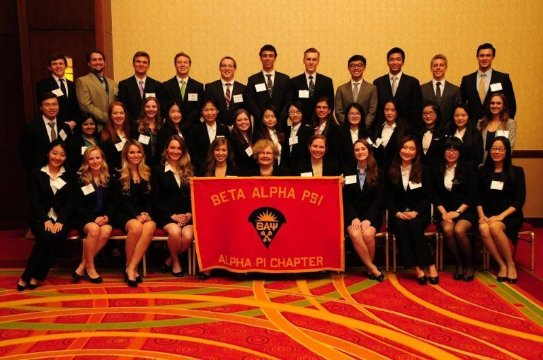
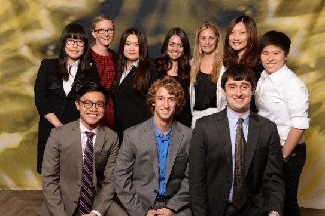

B.B.A. Accounting & Information Systems
Leadership & Volunteer Experience
Social Media Coordinator, Global Engagement Student Advisory Board, Tippie College of Business
(August 2015-Present)
- Administrated the social media project to launch the mobile app “WeChat” as a platform to reach international students
- Arranged a student panel to brainstorm appropriate and effective features of “WeChat”
- Collaborated with the Social Media Team at the Business College and other student organizations for this project
Vice President of Reporting, Beta Alpha Psi, Tippie College of Business
(April 2015-Present)
- Monitored Chapter performance to get the student organization qualified as a superior chapter for the year 2014-2015
- Proofread, consolidated and reported Chapter records to the national BAP office
- Assisted the family program to enhance connections and collaboration between members and candidates
Volunteer, Volunteer Income Tax Assistance(VITA), The University of Iowa
(January 2015-April 2015)
- IRS-qualified at Basic, Advance and Foreign levels of tax law certification
- Aided 30+ taxpayers with low income, disabilities, or limited English-speaking ability in filing their tax returns
- Assigned tax return preparers to taxpayers based on their certified tax knowledge
Student Organization Activities
Member, Beta Alpha Psi, Tippie College of Business
(April 2015-Present)
- Received Superior Member Award in recognition of extraordinary contribution for the year 2014-2015
- Helped organize annual BAP career fair “Meet the Firms Night” that served 40+ firms and 250+ accounting students
- Prepared Deloitte Etiquette Dinner for 75+ members and Deloitte professionals

Assistant Reporter, Beta Alpha Psi, Tippie College of Business
(December 2014-April 2015)
- Represented the Chapter in the “Best Practices – Effective Operations” competition at Missouri Valley regional meeting
- Designed and created 500+ name tags for members and professionals for meetings and events
- Documented meeting attendance and event participation for all members
Member, Global Engagement Student Advisory Board, Tippie College of Business
(August 2014-Present)
- Represented international students in the panel to reconcile cultural conflicts
- Supported Cross-Culture Workshop, International Business Fair, and International Buddies Program
- Brainstormed and planned events to enrich the global learning environment in the Business College

Other Skills
Language Proficiencies: native in Chinese, fluent in English, and conversational in Spanish
Technology: GitHub, HTML5, MS Excel, MS Access